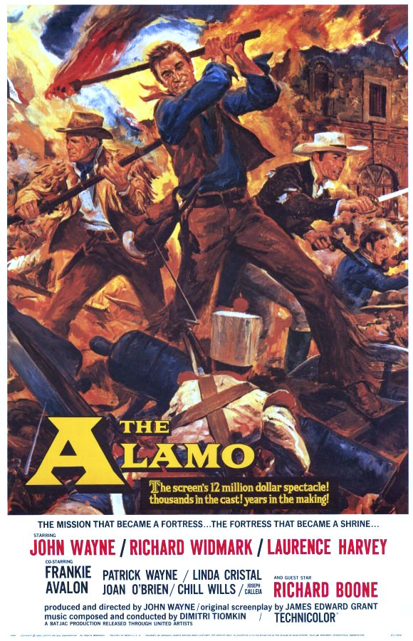

The Alamo
33rd Academy Awards
(Oscars 1961)
7 Nominations, 1 Award
| Nominations | ||
|---|---|---|
| Category | Nominees | Result |
| Best Motion Picture | John Wayne | Nominated |
| Actor in a Supporting Role | Chill Wills | Nominated |
| Cinematography (Color) | William H. Clothier | Nominated |
| Film Editing | Stuart Gilmore | Nominated |
| Sound | Fred Hynes and Gordon E. Sawyer | Won |
| Music (Music Score of a Dramatic or Comedy Picture) | Dimitri Tiomkin | Nominated |
| Music (Song) "The Green Leaves Of Summer" |
Dimitri Tiomkin and Paul Francis Webster | Nominated |